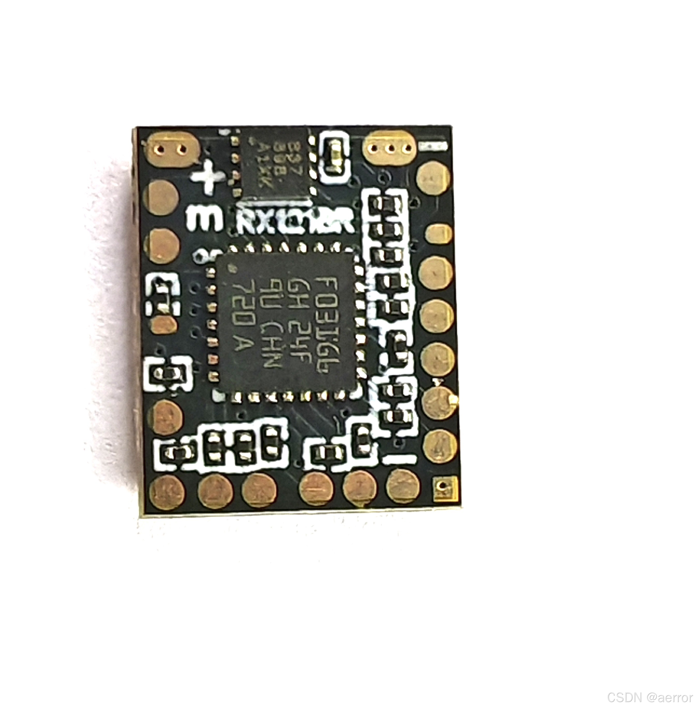
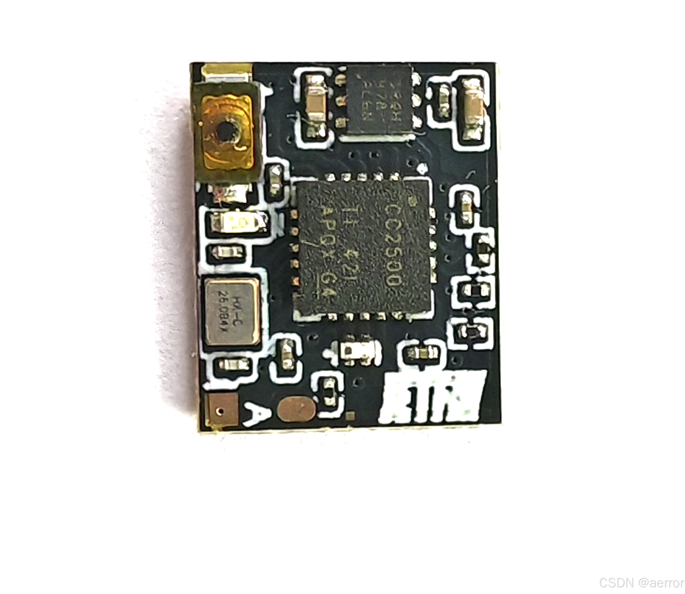
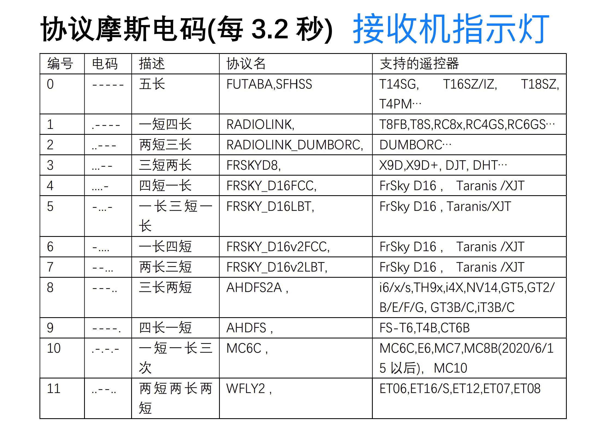
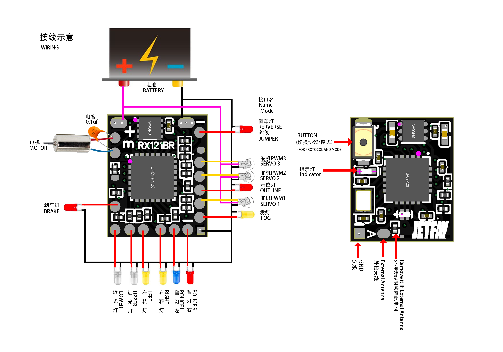
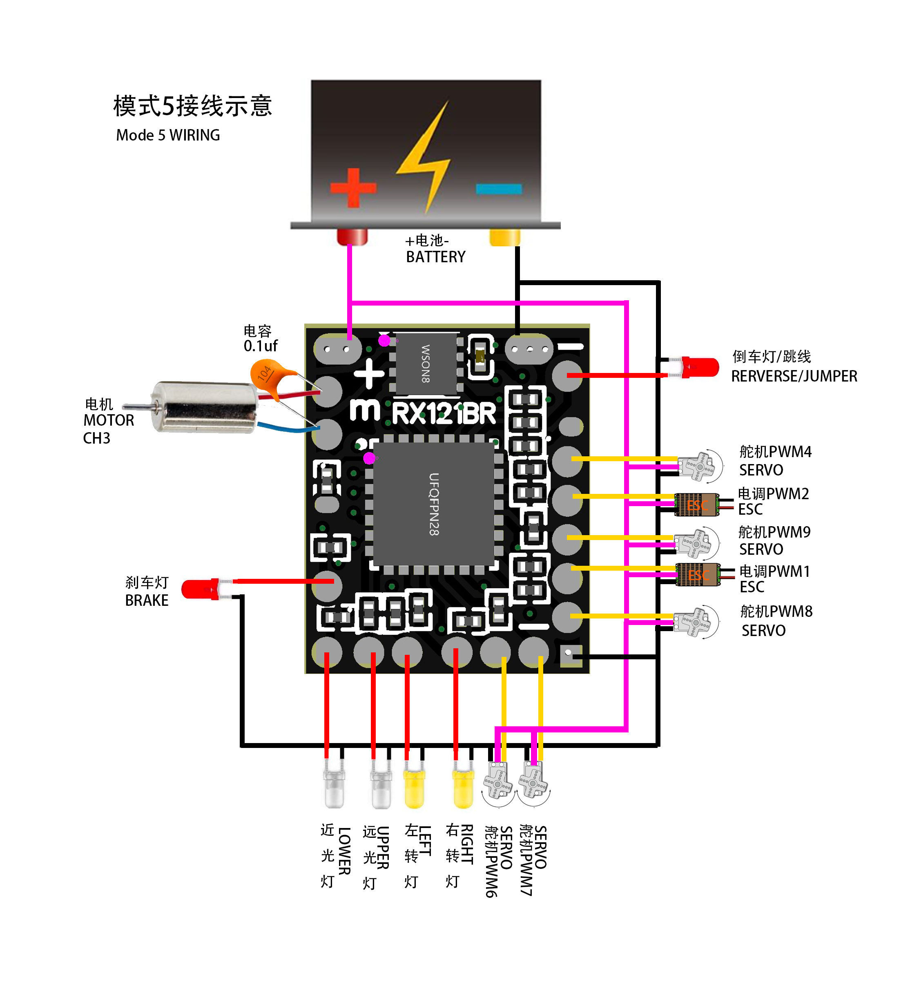
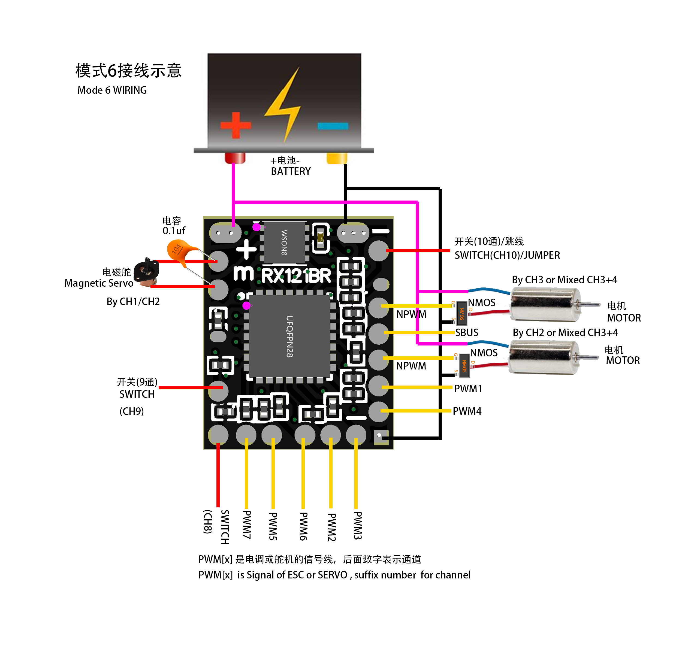
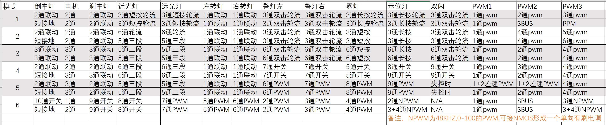
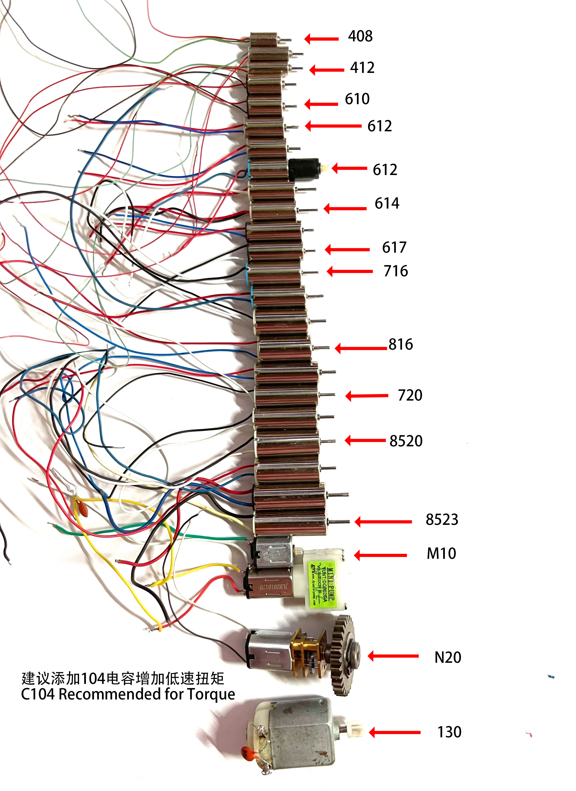

目录
6. BI_8PWM_3SW_SBUS（8路PWM电磁舵飞机）
概览

尺寸: 9.5x11.4x2.0mm，适用1:64/1:87模型
重量: 0.3g
供电电压：3.3-6V
无线协议：内置12种无线协议,支持FUTABA,RADIOLINK,DUMBORC,FRSKY,FLYSKY,MC6C,WFLY2等，点我看具体型号(ELRS除外）
灯光控制：内置联动，多种控制方式，3通及以上都可全部控制。
双向有刷电调：最大电流1.8A，持续电流1A , 一路
输出信号：有6个输出模式可选，可以输出多路标准PWM，电调PWM, SBUS和PPM。
外接灯光规格： 0402/0603LED, 总电流不可超600毫安，每路可接2-3个LED.
遥测回传：电压，信号强度，丢包率，仅部分协议支持，如RADIOLINK,DUMBORC, FLYSKY,WLFY2等
遥控距离：使用天地飞ET16S，地面无遮挡，内置天线约40米，外置3db的铜管天线约150米。
对码及模式选择操作
对码和模式选择的方法请看加密狗的说明书的1-4小节，是完全一样的操作。区别只是这个小的接收机只有一个指示灯，只有单色，只可以使用摩斯电码来判断当前的协议。

| 视频教程 |
| RX121BR静动接收机选择协议和对码的教程_哔哩哔哩_bilibili |
| RX121BR 静改动接收机切换工作模式教程_哔哩哔哩_bilibili |
接线示意图



输出和控制矩阵图

一、灯光控制信号操作方法
- 初始状态
- 每个通道上电时读取的值为初始值
a。 - 动作判定条件：操作后通道值变化量
|a - b| > 300。
- 每个通道上电时读取的值为初始值
- 操作类型定义
- 短按（瞬时操作）：
- 0.5秒内完成
a → b → a的舵量变化。
- 0.5秒内完成
- 长按（持续操作）：
- 超过1.5秒完成
a → b → a变化。
- 超过1.5秒完成
- 双按（复合操作）：
- 0.8秒内完成
a → b → a → b → a的双次触发（快速两次短按）。
- 0.8秒内完成
- 短按（瞬时操作）：
二、灯光控制方法
- 轮流控制模式
- 应用场景：单通道控制两个灯光（A和B）。
- 触发流程：
A开启 → B开启 → B关闭 → A关闭 → 循环 - 示例：短按切换远近光灯时，按顺序轮流点亮。
- 三段式控制模式
- 应用场景：单通道控制两个灯光（A和B）。
- 舵量阈值：
- 最低值（默认关闭）：A、B均关闭。
- 中间档（≥1300）：仅A开启。
- 最高档（≥1700）：A、B均开启。
- 示例：通过通道旋钮控制雾灯（A）和示位灯（B）。
三、倒车灯跳线配置
- 倒车灯接口可短接至负极作为硬件跳线，切换输出。
- 若需同时使用倒车灯，需串联 300Ω–1kΩ电阻 后接入电调反向输出焊点
四、模式详解
一共有6个模式，每个模式的介绍详细如下：
1. BI_PISTOLTX_3CH（3通道枪控）
- 基本控制
- 1通道：转向（SERVO）
- 2通道：内置电调（油门控制）
- 灯光联动
- 转向灯与1通道联动，刹车/倒车灯与2通道联动，失控时双闪。
- 3通道按键功能：
- 短按：切换远近光灯（轮流控制）
- 长按：切换雾灯和示位灯（轮流控制）
- 快速双按：切换警灯和双闪（警灯/雾灯/示位灯默认开启，双闪默认关闭）
- PWM输出
- PWM1：输出1通道信号（转向）
- PWM2：输出2通道信号；若倒车灯短接负极，则输出SBUS信号
- PWM3：输出3通道信号；若倒车灯短接负极，则输出PPM信号
适用遥控器：2或3通道枪控,如富斯的GT2/3系列。
2. BI_PISTOLTX_6CH（6通道枪控）
- 基本控制
- 1通道：转向，2通道：内置电调
- 灯光联动
- 转向灯与1通道联动，刹车/倒车灯与2通道联动，失控双闪。
- 3通道按键：短按控制雾灯，长按示位灯，双按切换警灯/双闪。
- 默认6通 轮流控制 远近光, 倒车灯短接时，5通三段式控制远近光灯。
- PWM输出
- PWM1：1通道（转向）
- PWM2：4通道信号
- PWM3：5通道信号， 倒车灯短接时，输出6通道。
适用遥控器：支持6通道的枪控,小飞象x6,RC6GS
3. BI_PANNELTX_6CH（6通道面板控）
- 基本控制
- 1通道：转向，3通道：内置电调
- 灯光联动
- 转向灯与1通道联动，刹车/倒车灯与3通道联动。
- 5通道：三段式控制远近灯（舵量分段：<1300关，1300-1700近光，>1700远光）
- 6通道按键：短按雾灯，长按示位灯，双按切换警灯/双闪
- PWM输出
- PWM1：1通道（转向）
- PWM2：2通道信号
- PWM3：4通道信号
适用遥控器：FS-I6/x/s,MC6/7/10c/mini,mc8b/10等面板式遥控器。
4. BI_TX10CH（10通道高端控）
- 基本控制
- 默认1通道转向，2通道电调；若倒车灯短接负极，则由3通道控制电调
- 灯光联动
- 独立通道控制：5通雾灯、6通三段远近灯、7通警灯、8通示位灯、9通双闪
- PWM输出
- PWM1：1通道（转向）
- PWM2：默认3通道；倒车灯短接时输出2通道
- PWM3：4通道信号
- 适用遥控器：FUTABA 10PX、DDF350等10通道遥控器。
5. BI_7PWM_6LIGHT（7路PWM差速工程车）
- 基本控制
- 1通道转向，3通道内置电调（炮塔动力）
- 2通道独立或差速输出：默认与1通道混合差速（外接双向电调），当倒车灯短接负极时则独立输出2通PWM,可以自行在遥控器设置混合算法。
- 灯光联动
- 仅5通道三段式控制远近灯，无警灯/雾灯/示位灯
- PWM输出
- PWM1：1通道（转向）
- PWM2：2通道（差速或独立输出）
- PWM3：4通道信号
- 警灯L: 输出6通PWM
- 警灯R: 输出7通PWM
- 雾灯: 输出8通PWM
- 示位灯:输出9通PWM
6. BI_8PWM_3SW_SBUS（8路PWM电磁舵飞机）
- 应用场景：超轻电磁舵飞机或其它应用，支持SBUS飞控与NMOS扩流控制。
- 默认模式
- 1通道控制内置双向电调（控制翻滚电磁舵）
- PWM1: 输出1通PWM
- PWM2: 输出SBUS，可接飞控
- PWM3：3通道48kHz PWM(0-1000), 接NMOS的栅极实现单向ESC，控制电机或电磁舵
- 示位灯：2通道48kHz PWM(0-1000)，接NMOS的栅极实现单向ESC，控制电机或电磁舵
- 警灯L: 输出2通PWM
- 警灯R: 输出3通PWM
- 雾灯: 输出4通PWM
- 左转: 输出5通PWM
- 右转: 输出6通PWM
- 远光: 输出7通PWM
- 近光： 8通开关，可接小电流灯光, 或可接NMOS扩流，接大电流灯光或设备
- 刹车： 9通开关，可接小电流灯光, 或可接NMOS扩流，接大电流灯光或设备
- 倒车： 10通开关，可接小电流灯光, 或可接NMOS扩流，接大电流灯光或设备
- 倒车灯短接模式
- 2通道控制内置双向电调（控制翻滚电磁舵）
- PWM1: 输出1通PWM
- PWM2: 输出SBUS，可接飞控
- PWM3: 3+4通单流混合差速输出 48Khz PWM(0-100), 接NMOS的栅极实现单向电子调速
- 示位灯: 3+4通单流混合差速输出 48Khz PWM(0-100), 接NMOS的栅极实现单向电子调速
- 警灯L: 输出2通PWM
- 警灯R: 输出3通PWM
- 雾灯: 输出4通PWM
- 左转: 输出5通PWM
- 右转: 输出6通PWM
- 远光: 输出7通PWM
- 近光： 8通开关，可接小电流灯光, 或可接NMOS的栅极扩流，接大电流灯光或设备
- 刹车： 9通开关，可接小电流灯光, 或可接NMOS的栅极扩流，接大电流灯光或设备
五、模式选择建议
| 模式编号 | 推荐场景 | 硬件要求 |
|---|---|---|
| 模式1 | 入门级静改动，或者接sbus和ppm飞控或加密狗 | 枪控+基础电调+LED灯组 |
| 模式2和3 | 静改动灯光改装漂移车 | 6通枪/板控+多路灯光控制器 |
| 模式4 | 高端静改动灯光改装漂移车 | 10通道高端控 |
| 模式5 | 全功能拖头/工程车 | 10通以上高端控+多路PWM扩展板 |
| 模式6 | 微型无人机/电磁舵滑翔机或其它应用 | SBUS飞控+NMOS电调模块 |
六、支持的电机
从408到 8523，m10-m20，到n20,到130, 使用大电机和大荷载时， 注意电池的放电c数要够，否则会引起压降，mcu低于3.3V 会死机。
为了提升低速扭矩，建议所有电机在电机输入两端并联一个104电容(0.1uf).

七、注意事项
-
电源线输出正负一定不要接反！
-
建议电压3.3-6V
-
每路灯光输出电流不要过载，每路3个左右。
-
遥控器校准：确保优美中位值正确。
-
失控保护：建议配置以免意外。